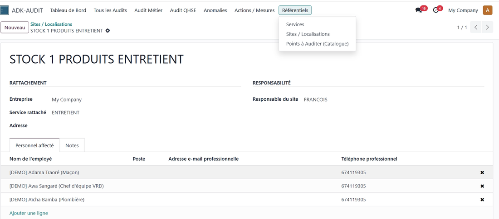
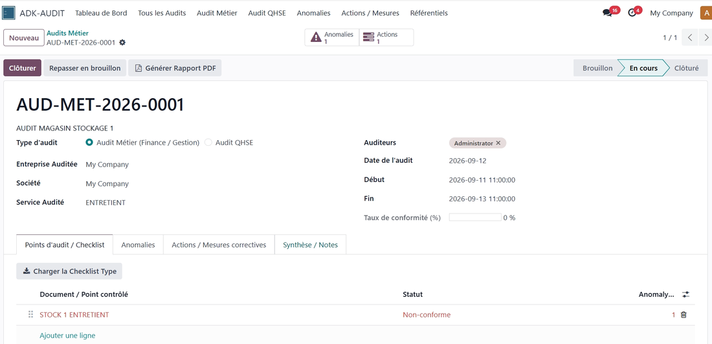
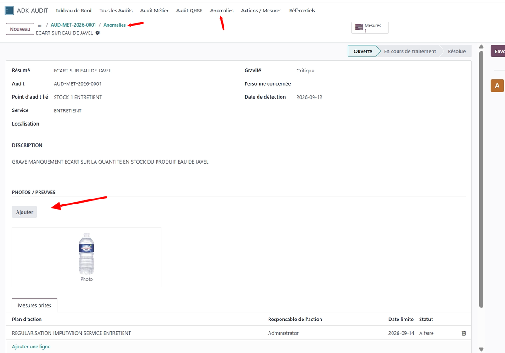
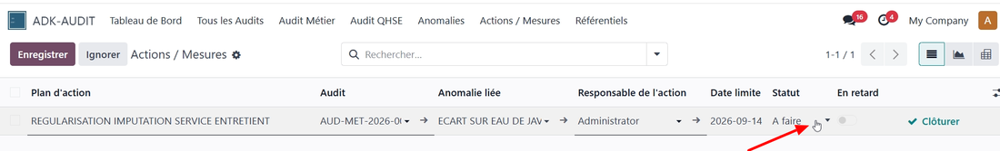
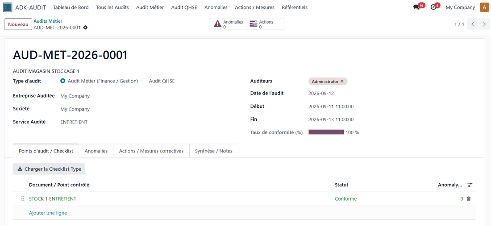
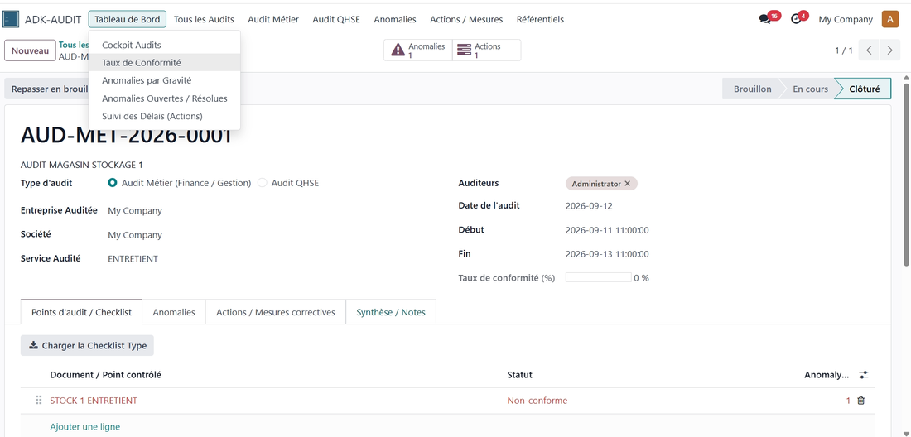
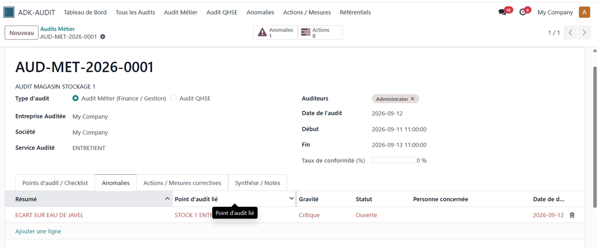
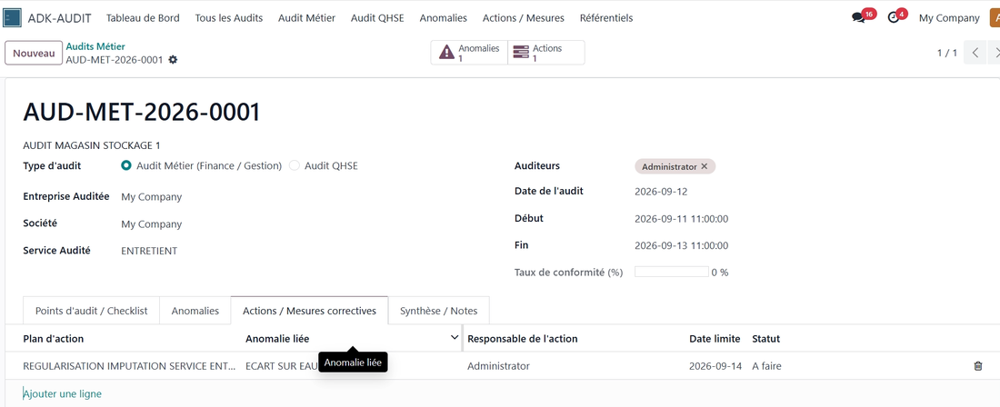
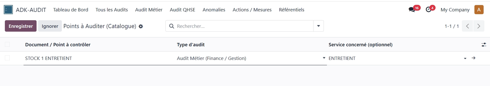

ADK-AUDIT organise les accès selon les responsabilités de chaque utilisateur afin de garantir un fonctionnement clair et maîtrisé du processus d'audit.
Gestion et administration globale du module ADK-AUDIT selon les droits configurés.
Réalisation et suivi des audits métier, contrôle des points d'audit et documentation des constats.
Suivi des audits QHSE, des anomalies, des actions correctives et de la conformité.
Consultation des éléments liés à son service et suivi des constats et actions qui lui sont attribués.
ADK-AUDIT structure vos audits internes et externes — métier et QHSE — du checklist jusqu'à la clôture. Les auditeurs enregistrent leurs constats avec preuves photo, les actions correctives sont suivies jusqu'à leur résolution, et la direction dispose d'un tableau de bord de conformité en temps réel.
KPI en temps réel : taux de conformité, anomalies par gravité, anomalies ouvertes/résolues, suivi des délais.
Deux types d'audit prêts à l'emploi, chacun avec sa checklist de référence et son workflow : Brouillon, En cours, Clôturé.
Constituez un catalogue de points à auditer par type d'audit et par service, et chargez-le en un clic sur chaque nouvel audit.
Chaque non-conformité devient une fiche anomalie : gravité, description, photos, et statut (Ouverte, En cours, Résolue).
Chaque anomalie est reliée à un plan d'action avec un responsable et une date limite ; les retards sont détectés automatiquement.
Générez un rapport d'audit propre directement depuis la fiche d'audit, prêt à être partagé.
Un processus simple en 5 étapes, de la configuration au pilotage de la conformité
Déclarez vos sites/localisations (avec le responsable et le personnel affecté), vos services, et constituez votre catalogue de points à auditer par type d'audit. C'est la base réutilisable pour tous vos futurs audits.

Fiche d'un site (localisation) : entreprise, service rattaché, responsable et personnel affecté.
Créez un audit, choisissez son type (Métier ou QHSE), assignez les auditeurs et les dates, puis chargez la checklist standard en un clic. Parcourez chaque point et marquez-le conforme ou non-conforme.

Un audit « En cours » avec sa checklist de points à contrôler et le statut de chaque point.
Chaque point non-conforme génère automatiquement une anomalie. Renseignez la gravité, une description claire, et joignez des photos comme preuve — tout ce dont un auditeur a besoin pour justifier la non-conformité.

Fiche anomalie : gravité Critique, description du constat, photo jointe en preuve, et plan d'action lié.
Chaque anomalie est reliée à un plan d'action avec un responsable et une date limite. Les actions en retard sont signalées automatiquement, pour ne rien laisser de côté.

Vue liste des actions correctives : anomalie liée, responsable, date limite et statut.
Une fois toutes les anomalies résolues, clôturez l'audit : le taux de conformité se met à jour automatiquement. Le tableau de bord donne ensuite à la direction une vision en temps réel de la conformité, des anomalies par gravité et des délais, sur tous les audits.

Audit clôturé avec un taux de conformité de 100% : toutes les anomalies ont été résolues.
D'autres écrans de l'application, pour voir l'ensemble du fonctionnement

Menu Tableau de bord : Cockpit Audits, Taux de conformité, Anomalies par gravité, Anomalies ouvertes/résolues, Suivi des délais.

Onglet « Anomalies » d'un audit : toutes les anomalies détectées, avec leur gravité et leur statut.

Onglet « Actions / Mesures correctives » d'un audit : les plans d'action liés à chaque anomalie.

Catalogue réutilisable des points à auditer, classés par type d'audit et par service.
Auteur : Kambeu Henang Ange Duval
Support : duvalkambeu61@gmail.com
Une question, un bug, une demande d'évolution ? Contactez-nous, nous répondons rapidement.